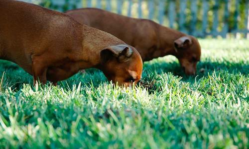
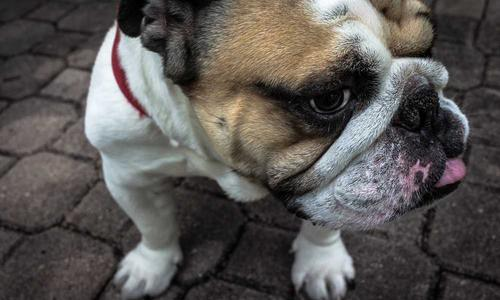

Uniting minds to build a kinder, more equal society.
InAmigos Foundation runs six grassroots projects that bring food, education, dignity, and opportunity to communities across 28 Indian states — powered entirely by volunteers who choose to show up.

A foundation built on friendship, action, and accountability.
InAmigos Foundation was founded on 23rd September 2020 by Govind Shukla with a simple belief: real change happens when driven individuals unite around children, women, animals, and the environment.
Headquartered in Bilaspur, Chhattisgarh, the foundation has grown into a volunteer-led movement active across 28 states, working closely with community partners, individual donors, and CSR contributors to run its six flagship projects.
Every rupee and every hour is channelled through a registered, audited structure — so supporters can see exactly where their contribution goes.
- 2020Registered as a Section 8 non-profit, licensed by the Central Government.
- 28States across India where InAmigos volunteers currently run active projects.
- 6Flagship projects covering food, education, animal welfare, women's skills, environment, and employability.
- 200+Volunteers contributing time, skills, and local knowledge on the ground.
Six projects, one goal — closing the gaps that hold communities back.
Each initiative targets a distinct, real need. Together they form a full circle of care, from a child's next meal to a stray dog's next meal to a woman's next paycheck.

Project Seva
Regular food and clothing distribution drives for the underprivileged and homeless, so vulnerable families can count on a next meal.

Project Bachpanshala
Learning spaces, digital literacy, and school support for children who would otherwise have no reliable access to education.

Project Jeev
Rescue, treatment, and feeding of stray and injured animals — so they live with a little more dignity and a lot less suffering.
Project Udaan
Skill development, financial literacy, and livelihood training that helps women build independence on their own terms.

Project Prakriti
Tree plantation and sustainability drives that work toward cleaner air and healthier, greener neighbourhoods.
Project Vikas
Employability and vocational skill-building programs that give young people a real shot at meaningful work.
Every project addresses a root cause — not just a symptom.
A meal solves today's hunger. A classroom, a skill, or a sapling changes what tomorrow looks like. That's the gap InAmigos Foundation is built to close.
Voices from the InAmigos community.
Being part of InAmigos Foundation gave me a real way to serve my community, not just talk about it.
Volunteering here is genuinely rewarding — I get to contribute to work that actually empowers people.
Every project we take on creates visible change. It's an honour to work alongside this team.
You don't need a title to make a difference. You just need to start.
Volunteer your time, support a project financially, or simply share our work — every bit of it moves the mission forward.